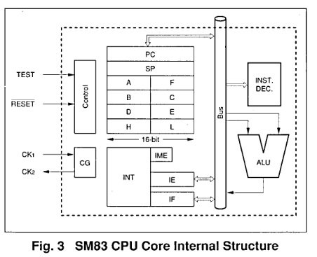

SM83 Reference
Opcode Table
https://gbdev.io/gb-opcodes/optables/
CPU Core Structure
Source: https://archive.org/details/1996_Sharp_Microcomputer_Data_Book/page/n155/mode/2up
The CPU core incorporates the instruction decoder (INST. DEC), arithmetic logic unit (ALU), accumulator (A), general purpose registers (B, C, D, E, H, L), program counter (PC), stack pointer (SP), flag register (F), interrupt control unit (INT), interrupt master enable flag (IME), interrupt enable register (IE) and interrupt flag register (IF).

Accumulator (A)
This is an 8-bit register used to hold arithmetic operation results and data. Sometimes referred to as A register.
General purpose registers (B, C, D, E, H, L)
These are 8-bit registers used as auxiliary registers to accumulator, and also used as register pair (BG, DE, HL) to function as data pointer.
Flag register (F)
| bit | 7 | 6 | 5 | 4 | 3 | 2 | 1 | 0 |
|---|---|---|---|---|---|---|---|---|
| Z | N | H | Cy | - | - | - | - |
Consists of 4 types of flags, each of which is set or clear as a result of execution of respective instruction.
- Z: Zero flag
- N: Negative flag
- H: Half-carry flag
- Cy: Carry flag
HALT MODE
Execution of the halt instruction puts the SM831x into the halt mode and the system clock is turned off, stopping the current program. Since the main clock oscillator connected across CKi and CK2 pins is active during the halt mode, devices requiring no system clock are kept in-operation. These devices are serial I/Os and timers.
The halt mode is disabled by one of the following means and the program will start again.
Release by reset input
A Low level on the #RESET pin will cause the SM831x to exit halt mode and start program at address OOOOh, the same way as with normal resetting.
Release by interrupt
When an interrupt event occurs, the SM831x exits the halt mode.
When a bit in the enable flag IE is set, the SM831x exits the halt mode if the interrupt request corresponding to the bit is generated. The action of the SM831x after exiting the halt mode is determined by the setting of the IME flag.
- IME = 0: The program will start at the location following the halt instruction address. Note that the bit in the interrupt flag register IF that caused the previous interrupt is kept set.
- IME = 1: After returning from the halt mode, the program will start at the vectored address. This is the same as with the normal interrupt handling process.
STOP MODE
Executing the STOP instruction puts the SM831x to the stop mode and turns off the main clock and system clock. All operations stop. Exception are serial l/Os, timers operating on external clock and clock generated across pins OSCin and OSCout. The stop mode is canceled by the following factors and the program starts after the specified time (return time).
by @msinger (Discussion #13):
STOP mode on GameBoy disables the external crystal and the device is fully un-clocked. (The only exception can be the serial port, if it was put into slave mode. Then it can get a clock from the master device on the SCK pin.)
Disabling of the external crystal oscillator is done by CPU pin T14. It is connected directly to the CK1 and CK2 pins.
Therefore STOP mode can't be exited by timer interrupts. It can also not be exited by serial port, even though it can be externally clocked in slave mode. It can only be exited by joypad interrupt, when someone presses a button. If neither of the button matrix output pins P14 or P15 is driven low before entering STOP mode, then the device will never wake up and has to be switched off and on again.
In the top left corner of page 7 you can see the CPU_WAKEUP signal, which wakes the CPU from STOP mode. It is basically just OR'ing the four button pins P10-P13 together. The latch (AWOB) is always enabled (in transparent/bypass mode), when clocks are disabled. So BOGA_1MHz must be high in STOP mode; you can verify that at the top of page 6, by following BOGA_1MHz back to OSC_ENA. If OSC_ENA (CPU T14) is low, then BOGA is always high. There is nothing else that goes into CPU_WAKEUP, which could possibly wake the system up.
Reset input
A Low level on the #RESET pin will cause the SM831x to exit the stop mode and start program at address OOOOh, quite the same as with normal resetting. For detailed description of reset, refer to "Hardware Reset Function"
Interrupt request
While operating on the external clock or clock generated across pins OSCin and OSCout, an interrupt from a serial I/O, timer, or external input pin Kl or KH causes the program to continue at the address following the STOP instruction.
Interrupt master enable flag IME
This register is used to enable or disable all the maskable interrupts simultaneously. Executing the El instruction sets the master enable flag IME, enabling the maskable interrupts. Executing Dl instruction resets the IME, disabling the maskable interrupts.
Interrupt flag register IF
⚠️ Program access to the IF in the DMG CPU has been removed.
by @msinger (Discussion #13):
About the IF register: it was never there in the first place. I think Sharp has drawn it into the overview diagram of the CPU just for simplicity. In the GameBoy, this register is external to the CPU. You can find it on page 10 of our schematic, mapped onto address FF0F.
(IF, FFFEh, R/W)
| Bit | 7 | 6 | 5 | 4 | 3 | 2 | 1 | 0 |
|---|---|---|---|---|---|---|---|---|
| IF7 | IF6 | IF5 | IF4 | IF3 | IF2 | IF1 | IF0 |
When interrupt event (IRQ0 to IRQ7) occurs, corresponding bit (IF0 to IF7) in the interrupt flag register IF is set to "1". At the end of the interrupt process, the bit in the interrupt flag register IF is automatically clear. If the interrupt event is left unprocessed, the bit remains "1" until it is forced to clear by a program.
Interrupt enable register IE
(IE, FFFFh, R/W)
| Bit | 7 | 6 | 5 | 4 | 3 | 2 | 1 | 0 |
|---|---|---|---|---|---|---|---|---|
| IE7 | IE6 | IE5 | IE4 | IE3 | IE2 | IE1 | IE0 |
This register is used to individually enable or disable 9-maskable interrupt. Setting a bit in this register to "1" enables corresponding interrupt; and "0" disables the interrupt. The setting of the interrupt enable register is made effective when the interrupt master enable flag IME is set. The IE register also sets the halt mode release conditions.
| STATE OF REGISTER IE BIT | INTERRUPT |
|---|---|
| 1 | Enable (as well as halt mode release enable) |
| 0 | Disable (as well as halt mode release disable) |
State after Hardware Reset
- IE: 00h
- IF: 00h
- IME: 0
- PC: 0000h
Overlapped Execution
The SM83 uses the overlapped instruction execution technique - some operations are completed at the beginning of the next M-cycle. More about this is written by @Gekkio: https://gekkio.fi/files/gb-docs/gbctr.pdf (Chapter 3.1)
This mechanism is connected with CLK7, which extends its "tail" to the beginning of the next M-cycle.
In general, this mechanism is quite unusual for understanding, especially for people writing emulators, so you just have to accept the fact that it exists in SM83.
Instruction Timing (measured, issue #400)
The durations below were measured on the real SM83 core netlist
(HDL/sm83, Icarus suite HDL/sm83/Icarus, test tb_sm83_cycles): each
executed instruction's oscillator-cycle count = the CLK periods between
the M1 (opcode-fetch) rising edges that bracket it. All values match the
documented SM83 cycle counts, turning the netlist into a timing oracle.
| Instruction | T-states (measured) |
|---|---|
| NOP, LD r,r', INC/DEC r | 4 |
| LD r,n, ADD A,n, LD A,(HL) | 8 |
| LD rr,nn / ADD HL,rr | 12 / 8 |
| LD (HL),n, INC/DEC (HL) | 12 |
| JR (taken) / JR (not taken) | 12 / 8 |
| JP nn | 16 |
| CALL nn / RET | 24 / 16 |
Note: CB-prefixed instructions produce an extra M1 pulse - the CB byte
fetch itself is an opcode fetch (two M1 pulses per CB instruction).